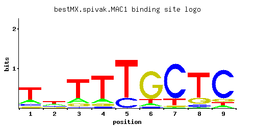

MAC1
YMR021C, CUA1
Copper-sensing transcription factor involved in regulation of genes required for high affinity copper transport
Best-performing DNA-binding model.

View and copy the recommended matrices ↘
A | 0.178 0.275 0.163 0.133 0.003 0.070 0.016 0.013 0.064 C | 0.107 0.181 0.040 0.043 0.212 0.048 0.804 0.075 0.788 G | 0.090 0.133 0.107 0.090 0.003 0.780 0.033 0.184 0.080 T | 0.624 0.411 0.689 0.734 0.781 0.101 0.147 0.728 0.069
A | 17 27 16 13 0 7 1 1 6 C | 10 18 4 4 21 4 80 7 78 G | 9 13 10 9 0 78 3 18 8 T | 62 41 68 73 78 10 14 72 6
A | -0.59 -0.15 -0.67 -0.88 -4.67 -1.52 -3.00 -3.20 -1.61 C | -0.52 0.01 -1.50 -1.43 0.16 -1.32 1.50 -0.88 1.48 G | -0.69 -0.30 -0.52 -0.69 -4.09 1.47 -1.70 0.02 -0.81 T | 0.67 0.25 0.77 0.83 0.89 -1.15 -0.78 0.82 -1.53
Alternative candidate matrices 5
Historical matrix candidates from the original ScerTF database. Expand a source to inspect its original logo, scores, and matrix values.
MAC1_AFoat et. al.P = 0.0002772View matrix ↘
MAC1_BFoat et. al.P = 1.59e-05View matrix ↘
MAC1Harbison et. al.P = 0.0001082View matrix ↘
MAC1Macisaac et. alP = 0.000161View matrix ↘
MAC1Pachkov et alP = 0.0001533View matrix ↘
Gene-level annotations and interactions.
Genes bound in ChIP-chip experiments 134 genes
YAL022C, YAR009C, YAR068W, YAR069C, YBL018C, YBL046W, YBL047C, YBL048W, YBL049W, YBL074C, YBL101W-B, YBR156C, YBR158W, YBR297W, YCL031C, YCR025C, YDL024C, YDL030W, YDL040C, YDL045W-A, YDL128W, YDL184C, YDR058C, YDR355C, YDR506C, YEL032W, YER001W, YER007C-A, YER145C, YER146W, YFR016C, YGL115W, YGL135W, YGL136C, YGL172W, YGL173C, YGL195W, YGL234W, YGL236C, YGR124W, YGR136W, YGR137W, YGR255C, YGR256W, YHL034C, YHR135C, YHR193C, YHR194W, YIL015C-A, YIL102C, YIL112W, YIL135C, YIL159W, YIL160C, YIR020C, YJL006C, YJL048C, YJL052W, YJL148W, YJL217W, YJR041C, YJR042W, YJR049C, YJR050W, YJR100C, YKL063C, YKL080W, YKL118W, YKL127W, YKR073C, YLL058W, YLL059C, YLR035C-A, YLR105C, YLR110C, YLR111W, YLR122C, YLR123C, YLR124W, YLR213C, YLR214W, YLR328W, YLR354C, YLR410W-A, YLR410W-B, YML055W, YML056C, YML071C, YMR188C, YMR189W, YMR319C, YMR320W, YNL016W, YNL017C, YNL034W, YNL097C, YNL111C, YNL250W, YNL251C, YNL255C, YOL022C, YOL077W-A, YOL078W, YOL080C, YOL092W, YOL121C, YOL152W, YOL155C, YOR042W, YOR138C, YOR140W, YOR236W, YOR268C, YOR269W, YOR271C, YPL018W, YPL019C, YPL177C, YPL179W, YPL192C, YPL198W, YPL251W, YPL253C, YPR010C, YPR072W, YPR109W, YPR110C, YPR111W, YPR123C, YPR124W, YPR125W, YPR160W, YPR170C, YPR171W
Genes affected by TF deletion 92 genes
YLR274W, YMR166C, YDR365W-B, YOR038C, YPL014W, YPL016W, YDR128W, YFL041W, YMR103C, YMR105C, YOL104C, YPL283C, YDR276C, YGR250C, YNL339C, YHR050W, YMR104C, YMR106C, YOL105C, YIL015W, YGR296W, YCR021C, YHL050C, YMR022W, YOR229W, YOR043W, YOR075W, YER150W, YIL087C, YML120C, YMR023C, YNR066C, YJR148W, YMR084W, YNL123W, YDL234C, YKL145W, YDL040C, YFL050C, YGR008C, YIR035C, YLR343W, YOR324C, YOR354C, YCL027W, YBR296C, YGL112C, YKL212W, YLR129W, YNR038W, YPL087W, YGL027C, YGR138C, YOR051C, YDR419W, YLR258W, YAR027W, YGR139W, YFL026W, YOR361C, YHR219W, YHR070W, YIR043C, YNL160W, YER067W, YGR261C, YML100W-A, YNR044W, YBR054W, YIL102C, YLR297W, YOL004W, YNL233W, YDR055W, YMR034C, YEL037C, YHR135C, YLR049C, YLR452C, YMR181C, YMR250W, YLL026W, YNL167C, YOL164W, YOR343C-B, YBL051C, YCL040W, YCL042W, YLR178C, YMR276W, YFL068W, YLR395C
Genes supported by both experiments 3 genes
YDL040C, YHR135C, YIL102C